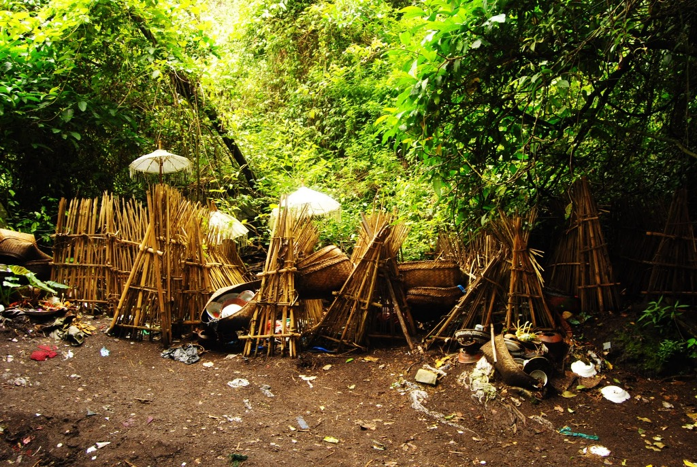
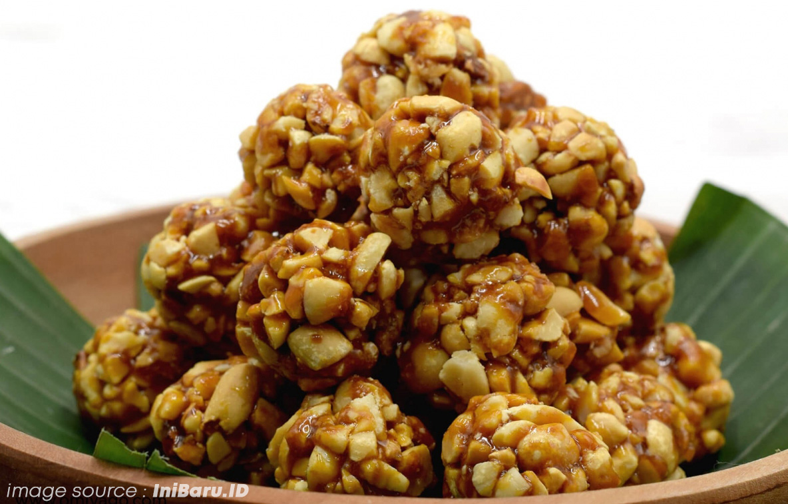
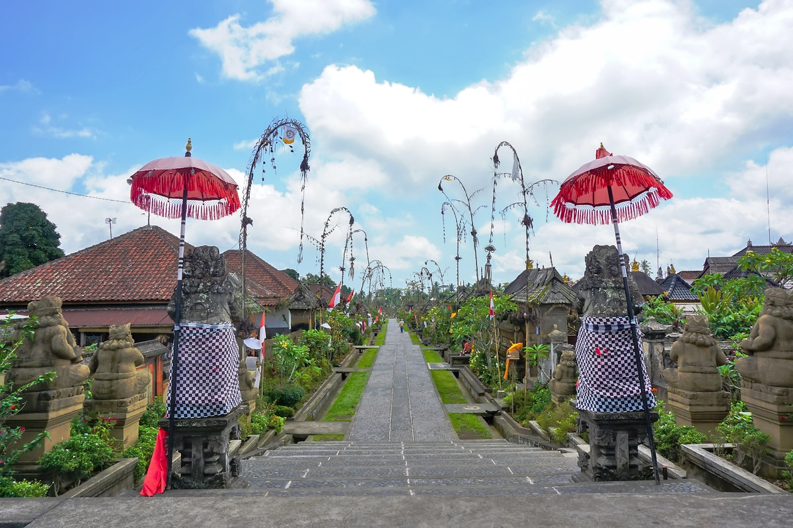
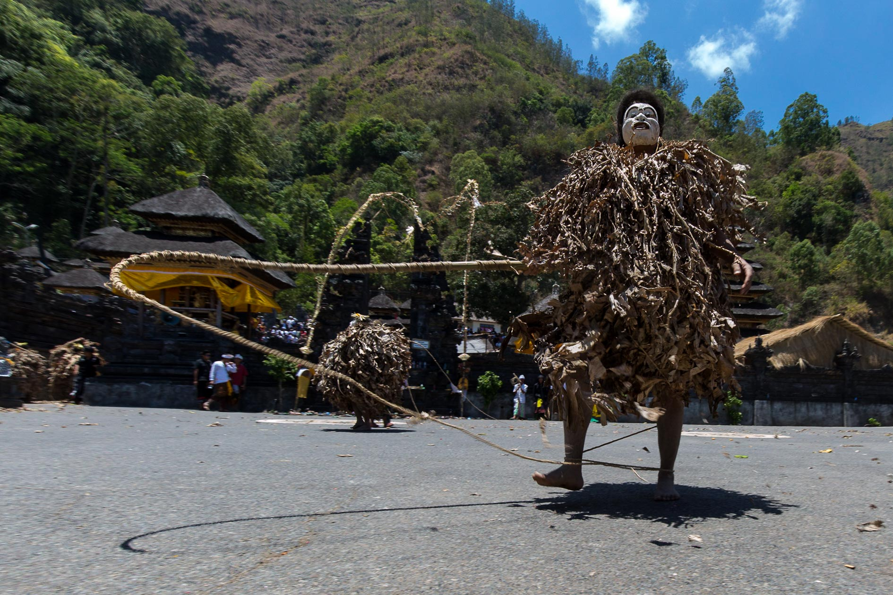

-
Kabupaten Bangli
Bangli adalah sebuah wilayah Kabupaten yang terletak di Provinsi Bali, Indonesia. Ibu kotanya adalah Kecamatan Bangli. Kabupaten Bangli adalah satu-satunya Kabupaten di Provinsi Bali yang tidak memiliki wilayah laut atau berbatasan langsung dengan laut, sehingga Bangli tidak memiliki pantai di tepi laut. Kabupaten Bangli meliputi daratan seluas 520.81 kilometer. Memiliki 182 Banjar, 69 desa adat dan 4 kecamatan yakni Bangli, Susut, Tembuku dan Kinatamani. Bangli merupakan daerah tropis yang mempunyai dua musim yakni musim hujan dibulan Oktober ke April dan Musim Kemarau dibulan April ke Oktober. Temperatur bervariasi antar satu tempat dan tempat yang lain tergantung pada ketinggian, dengan temperature 28°C. Kabupaten Bangli berbatasan dengan Kabupaten Buleleng di sebelah Utara, kabupaten Klungkung dan Karangasem di Timur, dan Kabupaten Klungkung, Gianyar di Selatan serta Badung dan Gianyar di sebelah Barat. Curah hujan rata-rata adalah 1500 mm³. Hujan lebih terjadi di bagian Barat Bangli dengan kelembaban rata-rata 79%.
Ciri Khas Bangli
Berikut adalah beberapa ciri khas Kabupaten Bangli berdasarkan:
BUDAYA
Tradisi pemakaman di Desa Trunyan merupakan salah satu desa di Bangli yang memiliki tradisi pemakaman unik, dimana orang yang meninggal di desa tersebut tidak dikubur atau dikremasi, melainkan diletakkan di bawah pohon Taru Menyan, yang mampu menghilangkan bau jenazah. Salah satu aturan tradisi ini adalah jumlah jenazah di bawah pohon Taru Menyan tidak boleh lebih dari sebelas orang dan orang meninggal tersebut wajib meninggal secara wajar, telah menikah, dan anggota tubuh lengkap. Wilayah pemakaman di sana disebut dengan Sema Wayah, jenazah ditutupi hanya dengan kain putih. Jenazah tidak menimbulkan bau busuk dan tidak dihinggapi serangga karena adanya pohon Taru Menyan, yang dapat mengeluarkan wangi harum dan mampu menetralisir bau busuk.
Alamat: KLIK DISINI
MAKANAN KHAS
Jaja Geti Geti adalah Jaja geti-geti merupakan makanan khas Bangli yang wajib Kamu coba saat berada di Bangli. Jaja geti-geti termasuk camilan yang bisa menjadi sajian saat bercakap dengan teman atau keluarga.Makanan ini hanya dapat ditemukan di Pasar Bangli saja, tempat lain jarang bahkan tidak ada yang menjual makanan khas Bangli ini. Jadi, saat Kamu sedang berada di Bali dan ingin mencicipi makanan ini dapat langsung mengunjungi Pasar Bangli.
DESTINASI WISATA
Desa Penglipuran merupakan salah satu desa adat yang terletak di Kabupaten Bangli, Provinsi Bali, Indonesia. Desa Penglipuran terkenal sebagai salah satu tujuan wisata di Bali karena masyarakatnya yang masih melestarikan budaya tradisional dalam kehidupan sehari-hari. Arsitektur bangunan dan pengolahan lahannya masih mengikuti konsep Tri Hita Karana, yaitu filosofi masyarakat Bali tentang keseimbangan hubungan antara Tuhan, manusia dan lingkungannya. Desa Penglipuran berhasil membangun pariwisata yang memberikan manfaat bagi seluruh masyarakatnya tanpa menghilangkan budaya dan tradisinya. Pada tahun 1995, Desa Penglipuran juga mendapat penghargaan Kalpataru dari Pemerintah Indonesia atas upayanya menjaga Hutan Bambu di ekosistem lokalnya.
Alamat: KLIK DISINI
KESENIAN KHAS
Barong Brutuk adalah sebuah sepasang arca atau barong khas Bali. Umat Hindu Bali mempercayai bahwa Barong Brutuk adalah simbol penguasa di Desa Trunyan, Ratu Sakti Pancering Jagat (laki- laki / di dalam prasati disebut Ratu Datonta) dan Ida Ratu Ayu Pingit Dalem Dasar (perempuan). Barong brutuk menanamkan pengetahuan tentang leluhur kepada generasi penerus mereka. Barong Brutuk dikatakan pula sebagai symbol pertemuan perempuan dengan laki - laki sebagai proses kehidupan manusia dalam Agama Hindu disebut Purusa dan Pradana. Barong brutuk ini ditarikan oleh 21 orang pemuda yang sbelumnya harus melewati masa karantina terlebih dahulu selama 42 hari yang dilaksanakan disekitar areal suci pura, selama 42 hari tersebut pemuda tersebut dilarang meninggalkan areal pura dan dilarang berhubungan dengan perempuan.
Lihat Video: KLIK DISINI